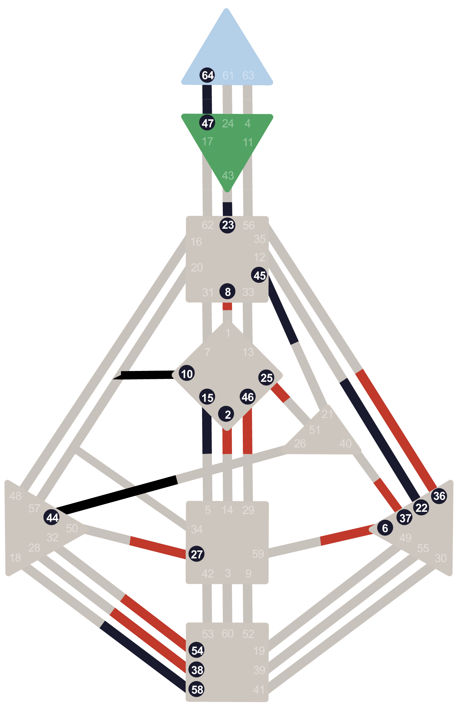

Lezione introduttiva di orientamento
Benvenuti al corso base
di Human Design
Formatrice: Valentina Russo
valentinarussobg5.com

Lezione introduttiva di orientamento
Formatrice: Valentina Russo
Il binario e la sintesi del disegno

Fig. 1 — La carta di Valentina Russo, 21 giugno 1988, Saluzzo.
Esercizio pratico · Il Rosso e il Nero
Fig. 2 — Il risultato atteso: rosso e nero sullo stesso foglio.